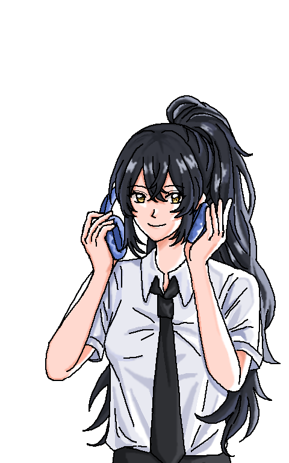

Penny
Hi, I’m Penny, 21 years old, my pronouns are she/her, and I'm currently a senior illustration student.
Before you were selected as the interviewee, I learned that you have experience building parasocial relationships with fictional characters. Could you briefly describe through which mediums (manga/comics, anime/animation, games, novels, movies, TV dramas, etc.) you primarily establish such relationships with fictional characters?

Catherine
Hi, My name is Catherine, pronouns she/her. I am 21 years old and a senior student majoring in fashion design.
Before you were selected as the interviewee, I learned that you have experience building parasocial relationships with fictional characters. Could you briefly describe through which mediums (manga/comics, anime/animation, games, novels, movies, TV dramas, etc.) you primarily establish such relationships with fictional characters?

Sammi
Hi, My name is Catherine, pronouns she/her. I am 21 years old and a senior student majoring in fashion design.
Before you were selected as the interviewee, I learned that you have experience building parasocial relationships with fictional characters. Could you briefly describe through which mediums (manga/comics, anime/animation, games, novels, movies, TV dramas, etc.) you primarily establish such relationships with fictional characters?
